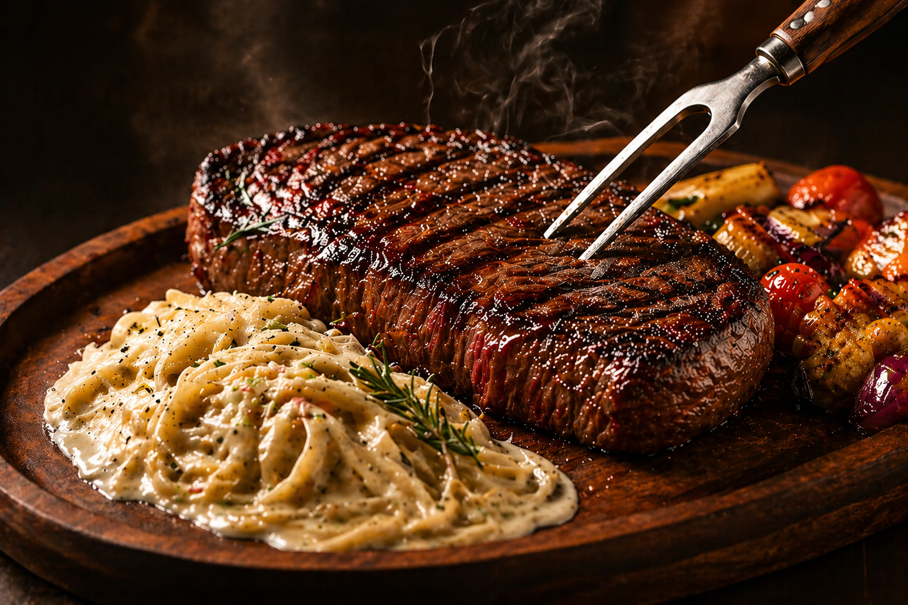

Sabores que Tocam
Descubra o equilíbrio perfeito entre tradição e inovação em cada prato. No Toq d'Ouro, cada refeição é uma celebração dos sentidos.

Trabalhamos apenas com os melhores produtores locais para garantir frescor e qualidade em cada prato.
Nossa cozinha é comandada por um chef com experiência internacional e reconhecimento gastronômico.
Um espaço cuidadosamente decorado para proporcionar conforto e elegância em cada visita.
Nossa equipe está preparada para oferecer um serviço personalizado e atencioso.